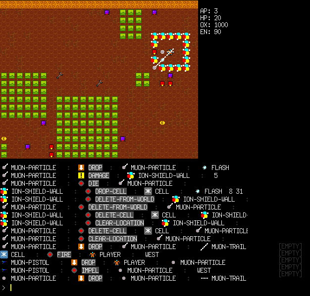
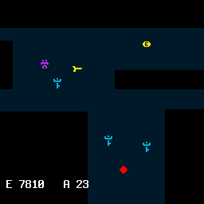
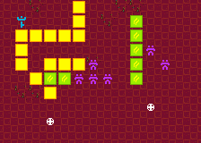
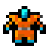
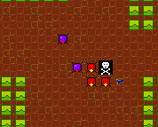
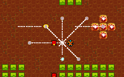
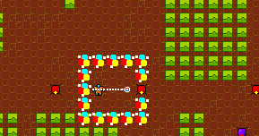

Void Mission Zero Design
This is the design document for the RLX demo game Void Mission Zero.
Snapshots
Alpha gameplay in running engine:

Early sketches:


Overview

Void Mission Zero is a sci-fi roguelike game written in Common Lisp. You play a lone agent infiltrating an automated droid factory in order to destroy the enemy robots within. To win the game, you must fight your way through the corridors and chambers of the factory, cutting through the countless robots infesting the site, and make your way to the reactor area on level 10. There you must destroy the cooling towers, which will cause the reactor to explode and destroy the factory.
The main ideas of Void Mission gameplay are:
- Turn-based strategic ranged and hand combat utilizing particle guns, robot suits, and vehicles, often with dozens of enemies at once
- Destructible and persistent environments
- Exploration and discovery
- Diverse gameplay styles (shooter, stealth, rpg)
- Randomly generated settings for a new experience each time.
- Atmospheric enhancement, with optional mood music.
Setting and structure
The story of Void Mission takes place in a remote research outpost called Installation 774. It is the size of a small city and is composed of square, uniformly-sized, interconnected modules whose interiors may be configured for different purposes and environmental conditions. For example:
- Cold storage
- Datacenter
- Crew barracks
- Recreation area
- Command center
- Laboratory
- Garage (armored suits, trucks, repair)
- Medical (health items)
- Robotics lab
These modules are about the size of one city block, approx 60x60 cells. Various airlocks separate the modules from one another. Some modules have become depressurized and therefore you need an armored robo suit to explore them. Some areas are so radioactive or toxic that only a remote-controlled bot can enter.
The city is designed to house about 1,000 employees, contractors, military personnel, and various visitors.
Stats
You have the following stats to keep track of:
DONE Action points (AP).
Every action has an AP cost.
DONE Speed (SPD).
Number of action points to spend each turn.
DONE Hit points (HP).
When this reaches zero, you die: 
DONE Energy (EN).
Energy weapons use up these points when fired. When this reaches zero, you cannot fire energy weapons until you recharge at least part of the gauge.
TODO Oxygen level (OX).
When this reaches zero, you rapidly lose HP until you die.
You can pick up items like Energy capsules to refill the EN gauge, Oxygen tanks for the OX gauge, and Medpacks for the HP gauge.
Terrain
At the beginning of each randomly generated mission, the Corporation will air-drop you into the area of operations, and you begin fighting.
Mission terrain varies, and will include sand with rocky outcroppings, ice canyons, machine highways, deep mazes, and massive droid-infested factories.
DONE Basic factory/maze alpha
TODO More mission types beta
Combat
DONE Ranged combat alpha

Ranged combat dominates the game. There are two firing modes; directional mode, in which you fire in a straight line along one of the eight compass directions; and targeted mode, in which a targeting cursor can be moved around the screen to fire at particular enemies:
$
@.
......
..:::
$ :$:
:::
KEY: @=player $=enemy .=shot :=cursor
DONE Directional ranged combat alpha
TODO Targeted ranged combat alpha
Melee combat alpha
Melee combat serves two purposes:
- The rusty wrench is a ready fall-back weapon in situations where you run out of ammo or energy.
- Balancing powerful weapons. For example an energy blade weapon could be very devastating, but not useful against very fast opponents.
DONE Wrench alpha
TODO Energy blade beta
Enemies
The enemies may be human employees of other corporations, or hostile alien/robot forms.
DONE Perceptors alpha
"Perceptors" are (floating spheroid eye-bots with shock probes). Red perceptors tend to seek the player even when far away, but purple perceptors wander around randomly until the player comes near. These are very dangerous to the player, and he must have a ranged weapon in order to deal with them effectively.
TODO Pathfinding Graviceptor beta
TODO Rooks beta
Rooks are large, slow, tank-like turrets-on-wheels. Their roof-mounted particle cannons are accurate and extremely deadly, but have two disadvantages. First, they cannot target immediately adjacent squares, so the player can survive by getting close and attacking with a melee weapon. Second, the particle cannon is slow to recharge, allowing a shot only once every few turns.
Being in an open area with several rooks is a bad idea—they'll blow you away. Instead you must lure them one by one into corridors and fight in close range—or freeze the group with EMP grenades and blast away.
TODO Bases beta
DONE Ion Shield alpha

The shield creates a barrier around you.
+-----+ | | | @ | | | +-----+ KEY: @=player +-|=shield
The shield doesn't move with you.
+-----+ | | | | | @ | +-----+ KEY: @=player +-|=shield
The shield fades after a few turns. It can also be damaged by shots:
...$
.......
+-- --......
| |
| @ ...........$
| |
+-----+
KEY: @=player .=shot $=enemy
TODO Environmental Conditions beta
TODO Environment suit
TODO Oxygen
TODO Pressure
TODO Contaminants
TODO Radioactivity
TODO Temperature
TODO Lighting and Radar beta
TODO Write this
TODO Music and SFX beta
TODO Older notes being merged into above sections
Ideas for roguelike activities
- Confront dozens or even hundreds of enemies at a time
- Wreak havoc in highly destructible environments
- Mine minerals and manufacture stuff with them
- Run around placing bombs on other objects/enemies, then run away and explode them! This idea is stolen from the PlayStation game "Silent Bomber."
- Feel the paranoia of never knowing what is around the corner
- Pit yourself against time as maps fill up with water or poison gas
- Destroy security cameras to prevent the BLS from seeing you
- Create temporary force fields to block enemies and protect yourself.
- Upgrade skills with chips/software/modules. You can find them by taking apart other machines.
- Locate schematics for fantastic devices and build them using raw materials and manufacturing work stations.
- Remote-control a limited robot in areas with too much radiation for humans to explore
- Get radiation sickness and take antidotes
- Experience and deal with extremes of temperature
- Researching objects, requires a workstation and research skill
- Stealth play, sneaking through dark areas to avoid detection
- Explore a machine-hollowed planetoid whose surface is speckled with numerous robotic installations and mysterious crash sites from a previous expedition
- Homage to Compile: a roguelike inspired by Zanac, Aleste, and Guardian Legend (this could absorb many of the ideas above)
- Surround yourself with slave robots who do your bidding and defend you from enemies
- Wear mecha suits of different types and capabilities.
- Dyson sphere exploration (whoa)
- Opening of game: ship runs out of fuel soon after. You're stuck with no weapons, no fuel = no unassisted overworld travel.
- The ship in orbit guides you through the early part of the game and helps introduce the backplot, via radio, but they are destroyed by the BLS after the game's first real challenge.
- OK so i'm going to steal the rather cliche concept of a hyper-powerful race of Ancients who leave artifacts behind. Except, they did not inhabit our galaxy and only left behind a few sites, maybe three, which are jealously guarded and exploited by the Corporation for their technological value. What you discover is that this planet was a research station for the ancients, which makes it extraordinarily valuable in terms of technology and information. Thus, the Corporation and the Authority, already in deep conflict, are both vying for control of this planet. The ancients are not gone, they just left the milky way out of fear of the BLS once it took over. The BLS is one of their experiments gone wrong. The Ancients created the faster-than-light drive, which humans discovered in a ship floating derelict. In fact perhaps the Corporation and the Authority have a monopoly on FTL travel and control it very strictly.
Stats
In the RPG system for Void Mission, numeric quantities like skills and characteristics are subsumed into one idea: stats.
Both characteristics and skills enable you to do something, and can change:
- permanently, as when leveling up
- temporarily while certain items are equipped
- temporarily while a certain effect is active
Stat values factor into various computations: for example, eyesight could determine the radius of your vision under normal lighting.
Basic stats
- Strength (attack power).
- Intelligence (perception, etc)
- Dexterity (attack/defence success)
- Constitution
Secondary stats
- Hit Points (HP) - from Constitution and Strength
- Psi Points - from Constitution and Intelligence
- Fatigue Points - From Constitution and battle fatigue
- Speed - From Dexterity and Strength and Intelligence
Skills
- Eyesight (intelligence)
- Hacking (intelligence, dexterity)
- Research (intelligence)
- Close combat (strength, dexterity)
- Ranged combat (strength, dexterity)
- Stealth (dexterity, intelligence)
- Vehicles (dexterity)
- Medicine (intelligence)
Rolls
Make it so that "average" skill of 10 is about equally likely to fail as succeed. Must roll less than or equal to controlling stat to succeed.
Improving stats and skills: experience and leveling up
Combat
- Player signals attack with M-direction
:action :attack :to attacker :from direction
- This is resolved to:
:action :attack :to attacker :from defender
- Attacker rolls dexterity for hit/miss.
- Attacker hits!
- Attacker rolls Strength for damage power, add to weapon roll
- Defender rolls Dexterity for dodge
- If hit, roll Strength, modify by weapon strength and close/ranged combat skill
:action :defend :to defender :from attacker :detail points
- Defender rolls Strength to resist damage, modify by armor class, sends to self:
:action damage :to self(defender) :detail points
Is this too complicated?
Places to visit
Each place will have associated enemies, items, and a selection of special things to do.
- Cold storage 665… find strange items
- Highway 291-M (randomly generated name).. with a vehicle you can speedily navigate the universe
- Caves with minerals to mine and freaky insects to defeat
- Power transfer stations… radiation!
- There was originally just an outpost on this planet, a research station… but eventually IT took over and hollowed out the planet…
Grenades
There are also two types of grenades. First we have electromagnetic pulse (EMP) grenades, which damage and temporarily freeze robots (and you, if you're not careful!). On the other hand, there are conventional explosive grenades, which do more damage and have no freezing effect.
Other
Two types of levels: Corridors (i.e. long, unidirectional strip-like levels with many distinct sections or rooms) and Chambers (sprawling mazes or arenas.)
Player attributes are a bit simplified when compared with a typical roguelike. Strength, Dexterity, Intelligence, Constitution, Hit Points, Psi Points, etc.
- Eyesight (intelligence)
- Hacking (intelligence, dexterity)
- Research (intelligence)
- Close combat (strength, dexterity)
- Ranged combat (strength, dexterity)
- Stealth (dexterity, intelligence)
- Vehicles (dexterity)
- Medicine (intelligence)